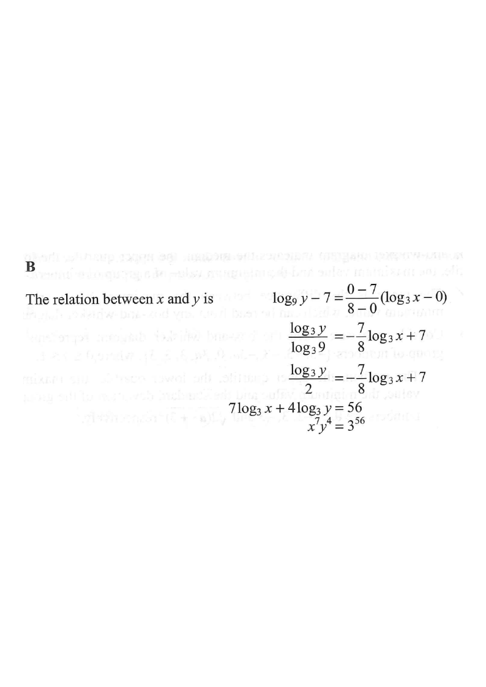

Drag / scroll the solution on the right — the graph updates for each step.
It is given that $\log_3 y$ is a linear function of $\log_3 x$.
The intercepts on the vertical axis and on the horizontal axis of the graph of the linear function are $7$ and $8$ respectively. Which of the following must be true?

Question. The graph of \(\log_{2}y\) against \(\log_{2}x\) is a straight line with vertical-axis intercept \(6\) and horizontal-axis intercept \(4\). Express the relation between \(x\) and \(y\) in the form \(x^{m}y^{n}=2^{k}\).